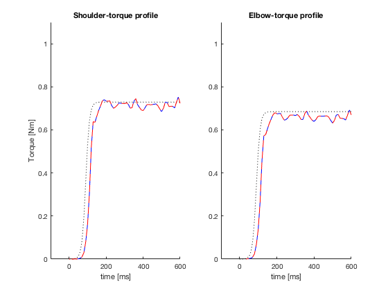
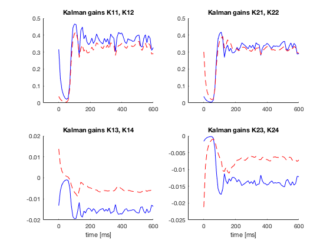
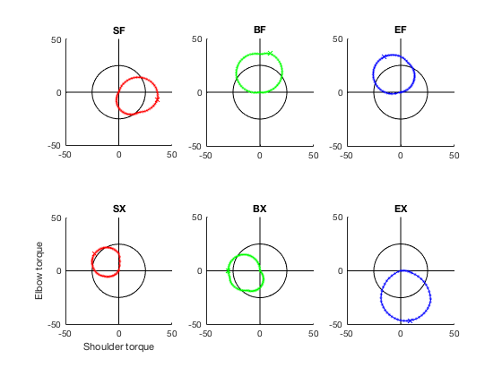
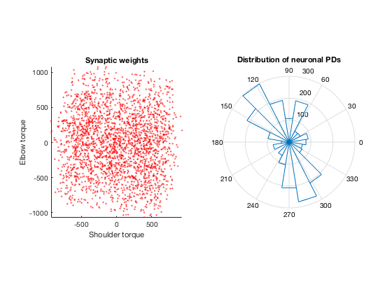

This is the readme for the models associated with the paper: Ueyama Y (2017) Optimal feedback control to describe multiple representations of primary motor cortex neurons. J Comput Neurosci 43:93-106 DOI: 10.1007/s10827-017-0650-z Y Ueyama supplied the matlab code. It requires mpt to be installed. As mentioned in the paper "The downloaded files are composed of one data set, ‘data.mat,’ and three codes: ‘DesignMPC.m,’ ‘RunSimulation.m,’ and ‘PlotSensoryGain.m.’ DesginMPC.m designs the model predictive controller for the isometric torque production task, and replicates the dataset data.mat. RunSimulator.m loads data.mat, executes the simulation, and produces some of the figures found in Figs. 3-4 and 9. PlotSensoryGain.m also carries out the simulation and plots the figures found in Figs. 5 and 6." If you have mpt installed (see above link) typing RunSimulation on the matlab command line will generate the following figures similar to the paper's figure 3a:  figure 2b:  figure 4a:  figure 9b top, 9c top: 